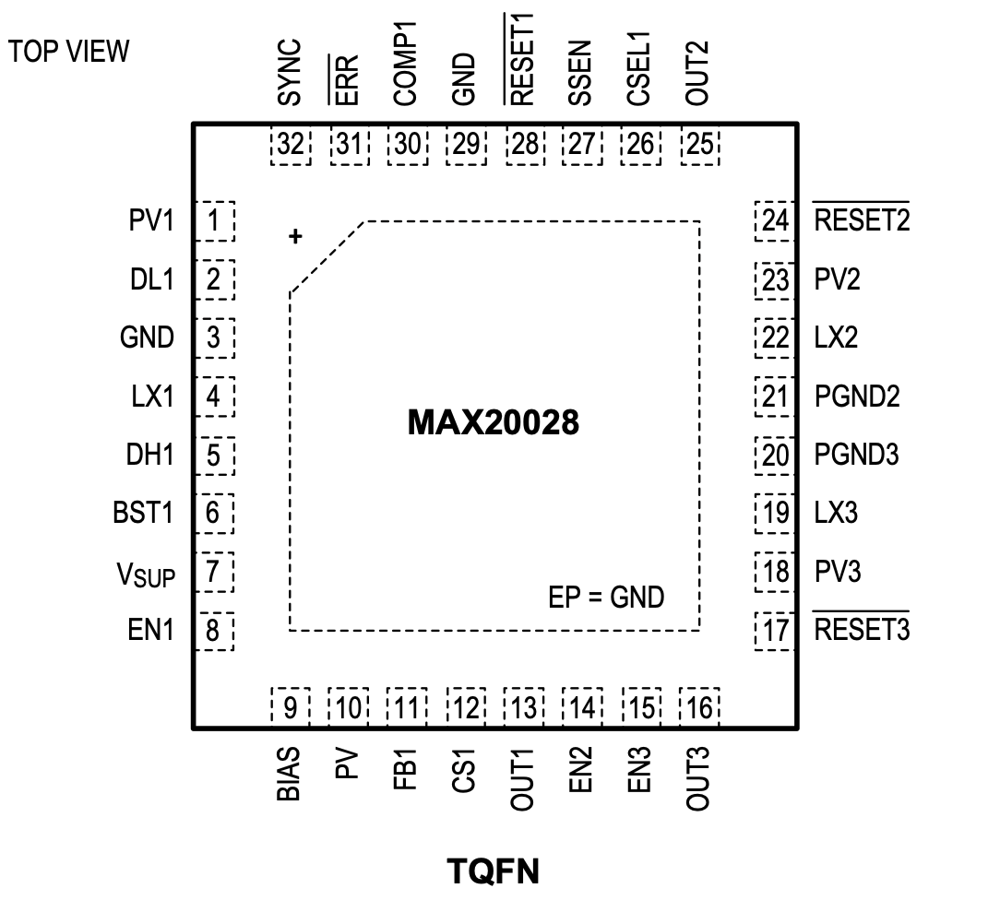

MAX20028

Pin Description
| PIN | NAME | FUNCTION |
|---|---|---|
| 1 | PV1 | Supply Input for Buck 1 Low-Side Gate Drive. Connect a ceramic bypass capacitor of at least 0.1µF from PV1 to GND. |
| 2 | DL1 | Low-Side Gate-Drive Output for Buck 1. DL1 output voltage swings from VGND to VPV1. |
| 3 | GND | Power Ground for Buck 1 |
| 4 | LX1 | Inductor Connection for Buck 1. Connect LX1 to the switched side of the inductor. LX1 serves as the lower supply rail for the DH1 high-side gate drive. |
| 5 | DH1 | High-Side Gate-Drive Output for Buck 1. DH1 output voltage swings from VLX1 to VBST1. |
| 6 | BST1 | Bootstrap Capacitor Connection for High-Side Gate Drive of Buck 1. Connect a high-voltage diode between BIAS and BST1. Connect a ceramic capacitor between BST1 and LX1. See the High- Side Gate-Drive Supply (BST1) section. |
| 7 | VSUP | Supply Input. Bypass VSUP with a minimum 0.1µF capacitor as close as possible to the device. |
| 8 | EN1 | High-Voltage Tolerant, Active-High Digital Enable Input for Buck 1. Driving EN1 high enables Buck 1. |
| 9 | BIAS | 5V Internal Linear Regulator Output. Bypass BIAS to GND with a low-ESR ceramic capacitor of 2.2µF minimum value. BIAS provides the power to the internal circuitry. |
| 10 | PV | Analog Supply. Connect PV to BIAS through a 10Ω resistor and connect a 1µF ceramic capacitor from PV to ground. |
| 11 | FB1 | Feedback Input for Buck 1. For the fixed output-voltage option, connect FB1 to BIAS for the factory-trimmed (3.0V to 3.75V or 4.6V to 5.35V) fixed output. Connect FB1 to GND for the 3.3V fixed output. For the resistor-divider-adjustable output-voltage option, connect FB1 to a resistive divider between OUT1 and GND to adjust the output voltage between 3.0V and 5.5V. In adjustable mode, FB1 regulates to 1.0V (typ). |
| 12 | CS1 | Positive Current-Sense Input for Buck 1. Connect CS1 to the positive terminal of the current-sense resistor. See the Current-Limit/Short-Circuit Protection and Current-Sense Measurement sections. |
| 13 | OUT1 | Output Sense and Negative Current-Sense Input for Buck 1. The buck uses OUT1 to sense the output voltage. Connect OUT1 to the negative terminal of the current-sense resistor. See the Current-Limit/Short-Circuit Protection and Current-Sense Measurement sections. |
| 14 | EN2 | Active-High Digital Enable Input for Buck 2. Driving EN2 high enables Buck 2. |
| 15 | EN3 | Active-High Digital Enable Input for Buck 3. Driving EN3 high enables Buck 3. |
| 16 | OUT3 | Buck Converter 3 Voltage-Sense Input. Connect OUT3 to the output of Buck 3. Connect OUT3 to an external feedback divider when setting DC-DC3 voltage externally. See the OUT2/OUT3 Adjustable Output-Voltage Option section. |
| 17 | RESET3 | Open-Drain Buck 3 Reset Output. RESET3 remains low for a fixed time after the output of Buck 3 has reached its regulation level (see the Selector Guide). To obtain a logic signal, pull up RESET3 with an external resistor connected to a positive voltage lower than 5V. |
| 18 | PV3 | Buck 3 Voltage Input. Connect a 2.2µF or larger ceramic capacitor from PV3 to PGND3. Connect PV3 to OUT1. |
| 19 | LX3 | Buck 3 Switching Node. LX3 is high impedance when the device is off. |
| 20 | PGND3 | Power Ground for Buck 3 |
| 21 | PGND2 | Power Ground for Buck 2 |
| 22 | LX2 | Buck 2 Switching Node. LX2 is high impedance when the device is off. |
| 23 | PV2 | Buck 2 Voltage Input. Connect a 2.2µF or larger ceramic capacitor from PV2 to PGND2. Connect PV2 to OUT1. |
| 24 | RESET2 | Open-Drain Buck 2 Reset Output. RESET2 remains low for a fixed time after the output of Buck 2 has reached its regulation level (see the Selector Guide). To obtain a logic signal, pull up RESET2 with an external resistor connected to a positive voltage lower than 5V. |
| 25 | OUT2 | Buck Converter 2 Voltage-Sense Input. Connect OUT2 to the output of Buck 2. Connect OUT2 to an external feedback divider when setting DC-DC2 voltage externally. See the OUT2/OUT3 Adjustable Output-Voltage Option section. |
| 26 | CSEL1 | Buck 1 Clock Select. Connect CSEL1 to GND for 2.1MHz operation. Connect CSEL1 to BIAS for an OTP-programmable divide-down operation. See the Selector Guide for the fSW1 divide ratio. |
| 27 | SSEN | Spread-Spectrum Enable. Connect SSEN to GND for standard oscillator operation. Connect SSEN to BIAS to enable the spread-spectrum oscillator. |
| 28 | RESET1 | Open-Drain Buck 1 Reset Output. RESET1 remains low for a fixed time after the output of Buck 1 has reached its regulation level (see the Selector Guide). To obtain a logic signal, pull up RESET1 with an external resistor connected to an appropriate voltage. |
| 29 | GND | Analog Ground |
| 30 | COMP1 | Compensation for Buck 1. See the Compensation Network section. |
| 31 | ERR | Open-Drain Error-Status Output. ERR signals a thermal-warning/shutdown condition. To obtain a logic signal, pull up ERR with an external resistor connected to a positive voltage lower than 5V. |
| 32 | SYNC | Synchronization Input/Output. SYNC allows the device to synchronize to other supplies. Connect SYNC to GND or leave unconnected to enable skip-mode operation under light loads. Connect SYNC to BIAS or an external clock to enable fixed-frequency forced-PWM-mode operation. When configured as an output, SYNC outputs the internally generated 2.1MHz clock. |
| - | EP | Exposed Pad. Connect the exposed pad to ground. Connecting the exposed pad to ground does not remove the requirement for proper ground connections to PGND2–PGND3 and GND. The exposed pad is attached with epoxy to the substrate of the die, making it an excellent path to remove heat from the IC. |